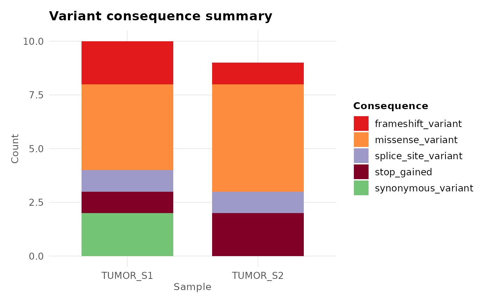
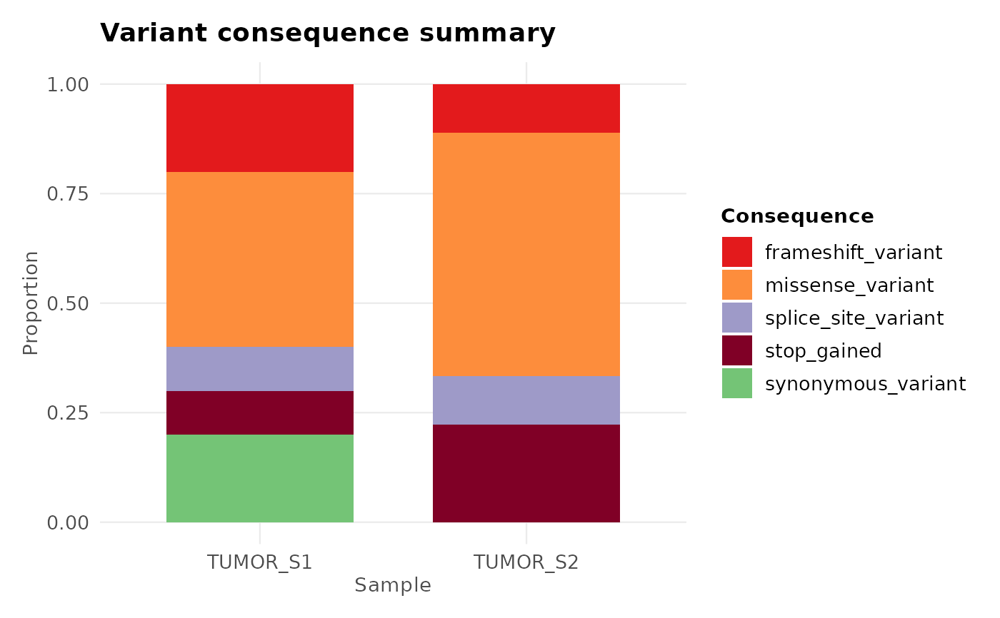
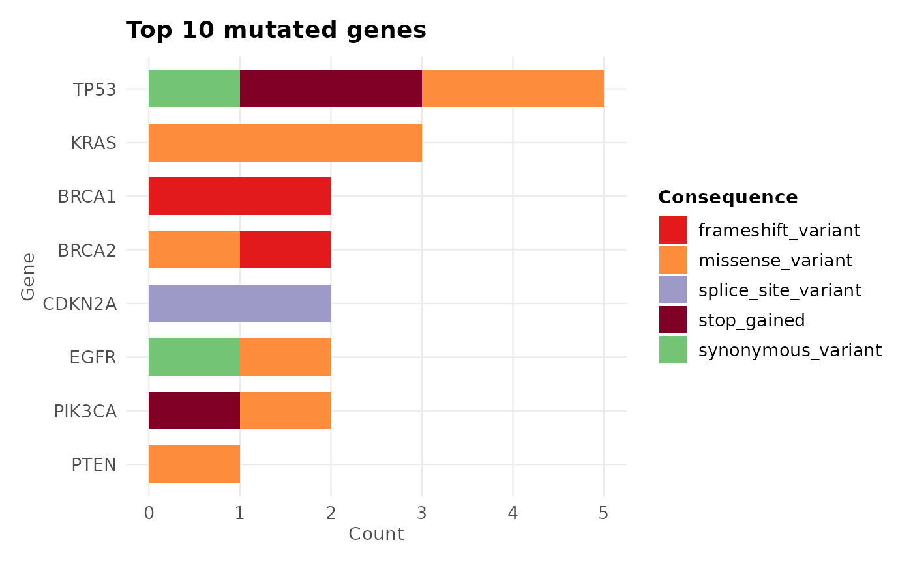

Summarises variant consequences (e.g. missense, frameshift, synonymous) across one or more samples, producing a stacked or grouped bar chart.
Arguments
- variants
A
gvfobject fromread_vcf()orcoerce_variants(), or anydata.framewith columnspos,consequence, and optionallygeneandsample.- samples
Character vector of sample names to include.
NULL(default) uses all samples. Ignored if there is nosamplecolumn.- group_by
"consequence"(default) stacks bars by consequence per sample;"gene"stacks by gene per consequence.- top_n
Integer. For
group_by = "gene", show only the top N genes by total variant count. Default10.- position
"stack"(default) or"fill"(proportional) or"dodge".- palette
Named character vector of colours for each consequence/sample category.
NULLuses the built-inggvariantpalette.- flip
Logical. If
TRUE, flips coordinates for horizontal bars. DefaultFALSE.- interactive
Logical. If
TRUE, returns aplotlyinteractive plot (requires theplotlypackage).
See also
plot_lollipop(), plot_variant_spectrum(), gv_palette()
Other ggvariant plots:
plot_lollipop(),
plot_oncoprint(),
plot_tmb(),
plot_variant_spectrum()
Examples
vcf_file <- system.file("extdata", "example.vcf", package = "ggvariant")
variants <- read_vcf(vcf_file)
#> ℹ Reading VCF: example.vcf
#> ✔ Reading VCF: example.vcf [11ms]
#>
#> Loaded 19 variant records across 7 chromosomes.
# Consequence counts per sample
plot_consequence_summary(variants)

# Proportional bars
plot_consequence_summary(variants, position = "fill")

# Top 10 genes coloured by consequence
plot_consequence_summary(variants, group_by = "gene", top_n = 10)
